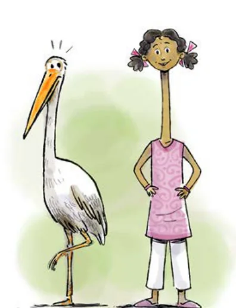

- Anagh mixes 600 mL of orange juice with 900 mL of apple juice to make a fruit drink. Write the ratio of orange juice to apple juice in its simplest form.
- Last year, we hired 3 buses for the school trip. We had a total of 162 students and teachers who went on that trip and all the buses were full. This year we have 204 students. How many buses will we need? Will all the buses be full?
- The area of Delhi is 1,484 sq. km and the area of Mumbai is 550 sq. km. The population of Delhi is approximately 30 million and that of Mumbai is 20 million people. Which city is more crowded? Why do you say so?
- A crane of height 155 cm has its neck and the rest of its body in the ratio 4 : 6. For your height, if your neck and the rest of the body also had this ratio, how tall would your neck be?

- Let us try an ancient problem from Lilavati. At that time weights were measured in a unit named palas and niskas was a unit of money. "If \(2\frac{1}{2}\) palas of saffron costs \(\frac{3}{7}\) niskas, O expert businessman! tell me quickly what quantity of saffron can be bought for 9 niskas?"
- Harmain is a 1-year-old girl. Her elder brother is 5 years old. What will be Harmain’s age when the ratio of her age to her brother’s age is 1 : 2?
- The mass of equal volumes of gold and water are in the ratio 37 : 2. If 1 litre of water is 1 kg in mass, what is the mass of 1 litre of gold?
- It is good farming practice to apply 10 tonnes of cow manure for 1 acre of land. A farmer is planning to grow tomatoes in a plot of size 200 ft by 500 ft. How much manure should he buy? (Please refer to the section on Unit Conversions earlier in this chapter).
- A tap takes 15 seconds to fill a mug of water. The volume of the mug is 500 mL. How much time does the same tap take to fill a bucket of water if the bucket has a 10-litre capacity?
- One acre of land costs ₹15,00,000. What is the cost of 2,400 square feet of the same land?
- A tractor can plough the same area of a field 4 times faster than a pair of oxen. A farmer wants to plough his 20-acre field. A pair of oxen takes 6 hours to plough an acre of land. How much time would it take if the farmer used a pair of oxen to plough the field? How much time would it take him if he decides to use a tractor instead?
- The ₹10 coin is an alloy of copper and nickel called ‘cupro-nickel’. Copper and nickel are mixed in a 3 : 1 ratio to get this alloy. The mass of the coin is 7.74 grams. If the cost of copper is ₹906 per kg and the cost of nickel is ₹1,341 per kg, what is the cost of these metals in a ₹10 coin?
Chapter 7 · Proportional Reasoning 1